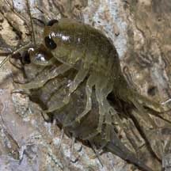
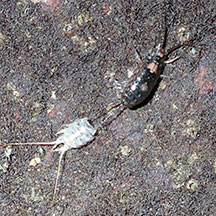
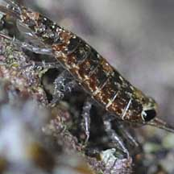
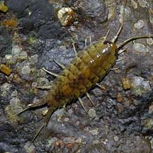
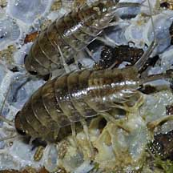
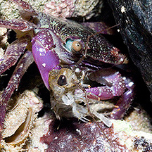
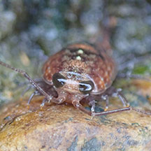

|
|
| sea slaters text index | photo index |
| Phylum Arthropoda > Subphylum Crustacea > Class Malacostraca > Order Isopoda |
| Sea
slaters Ligia sp. Family Ligiidae updated Mar 2020
Where seen? These nervous little animals are commonly seen on almost all our shores, often swarming in large numbers at low tide. They are common on rocky shores, also among mangroves. What are sea slaters? Sea slaters are sometimes called sea cockroaches. Although sea slaters are also arthropods, they are not insects! They are crustaceans like crabs and prawns; but are very happy out of water. Features: 2-3cm. Sea slaters have seven pairs of legs and move very fast! They have huge eyes and very long antennae. They are well adapted for life out of water, breathing air directly through 'pseudo-lungs'. |
 Mating? Kranji, Jun 06 |
 Just moulted. Empty skin on the left. Pulau Sekudu, Jul 20 |
 Body very flat. Labrador, May 09 |
| What do they eat? Sea slaters
may scavenge, nibbling on whatever recently died on the rocky shore.
They may also eat tiny creatures and seaweeds. At low tide, they swarm
over the rocks in large numbers. Slater babies: Sea slaters brood their young in special pouches. The young are released as miniature adults instead of free-swimming larvae. |
|
 Sentosa, Oct 04 |
 Chek Jawa, Jan 05 |
 Feeding on recently destroyed barnacles? |
| Sea slaters on Singapore shores |
On wildsingapore
flickr
|
| Other sightings on Singapore shores |
 Captured by a Purple climbing crab. Pulau Hantu May 09 Photo shared by Marcus Ng on flickr. |
 Pulau Jong, Aug 20 Photo shared by Joleen Chan on facebook. |
Links
|